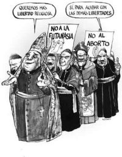
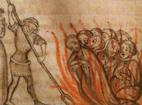
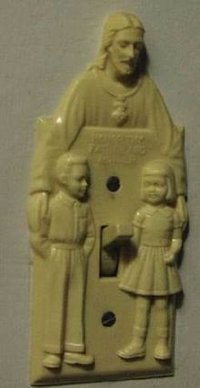

Iglesia católica
 De: La Frikipedia, la enciclopedia extremadamente seria.
De: La Frikipedia, la enciclopedia extremadamente seria.
| De la serie religiones del mundo:
|
| Iglesia católica
|
|
|
| El máximo representante de dios en la Tierra.
|
|
| Creador
|
Jesús (Que es el hijo, aunque también es el padre y además es el espíritu santo)
|
| Profeta
|
Isaias, Jonas, Joel y todos los del vídeo de Judas de Lady Gaga
|
| Número de creyentes
|
Mil doscientos cincuenta y cuatro millones (el resto de la población mundial irá al infierno)
|
| Dogmas fundamentales
|
Todas las que diga el credo y dar el diezmo
|
| No se puede...
|
Amar a alguien de tu mismo sexo (eso es pecado, no como el incesto o la pedofilia); masturbarte (mejor viola a una mujer, ellas no valen nada); usar condón, porque no hay nada más lindo que un bebé, o una enfermedad de transmisión sexual
|
| Sí se debe...
|
¿Amar al progimo y ayudar a quien lo necesita? Bah ¡Tú sólo da el diezmo! Dios se encargará de lo demás
|
| Promesas principales
|
La Segunda Venida de Cristo en la boca de los feligreses,
|
| Nivel de frikismo
|
nivel dios
|
| Máximo exponente
|
Una papa
|
«¿Si Dios no existe como fue que Jesús caminó sobre el agua?»
~ Católico convenciendo a un ateo de la existencia de Dios
«Si Dios no existe ¿por qué Sasha Grey lo menciona en todos sus vídeos?»
~ Otro católico con mejores argumentos
«NO OIGO NO OIGO SOY DE PALO TENGO OREJAS DE PESCADO»
~ Un católico escuchando la opinión de un agnóstico
La Iglesia Católica es una empresa vendedora de fe que ofrece una vida eterna, la compañía de un amigo imaginario 24/7, no tener que elegir que está bien y que está mal (Dios lo hará por ti) ¡adiós libre albedrío!, y el perdón, ¡así que no importa nada de lo que hayas hecho!; todo esto y más al increíble precio de un diezmo.
Además contarás con la protección de Jesús que puede hacer increíbles cosas por ti, como: Caminar sobre el agua, convertir el agua en vino y otros trucos con agua.
Definición
Conjunto de personas que no irán al infierno por creer en el único Dios. La mayoría de las personas que conforman esta iglesia nunca han leído la Biblia pero la aceptan y la defienden.
Introducción
El catolicismo (del griego καθολικός 'Universal') es una rama del cristianismo que se caracteriza por estar liderada por un papa (no el señor cara de papa, me refiero al anciano que siempre va vestido extravagantemente y vive en un palacio) .
Historia
Dios padre decidió un día que las personas eran malas y pecadoras, así que como el ser súper bondadoso que es decidió mandar a su hijo único (que es el mismo) a la Tierra (sabiendo que lo matarían), así que embarazó a una virgen, a través del espíritu santo, que, ¡vaya sorpresa!, es el mismo; todo esto para lograr el perdón de los pecados que el mismo otorga.
Durante la vida como ser humano de Jesús el decidió fundar su propio club de fans al que ahora conocemos como Iglesia Católica.
Pepe Rodríguez (¿?) acerca de la Iglesia Caótica
 En la actualidad, la moderna Iglesia Católica es tolerante y propugna por la dignidad humana, la igualdad y otras libertades
Organización
Es una enorme cadena de personas (Hombres, obviamente, porque recordemos que las mujeres no valen nada) besándose el trasero para recibir dinero.
Actualidad
Tras los dorados años de la dictadura franquista (régimen del nacional-catolicismo) la Iglesia actualmente busca su lugar en la Sociedad moderna. Es una tarea ardua, teniendo en cuenta la antigüedad de sus estructuras, pero ha encontrado un camino curiosamente en España, a través del OBICOPEPE (Obispos+Cope+PP). Es un caso curioso en biología: un organismo socialmente organizado que para mejorar sus expectativas se asocia en simbiosis con dos organismos también organizados socialmente. Aplicando la doctrina USA (con enemigo invisible mejor se abusa), las tres especies depredadoras consiguen una efectividad trófica mucho mayor que por separado.
El Papa
Es un ser dotado de superpoderes al estilo de Superduperman, los cuales le hacen invulnerable a las críticas ya que, entre dichos poderes, está el de la infalibilidad, a huevo, si platican con diosito (Con un par ...)
Pone gran cantidad de huevos que luego son cuidados con mimo en los Seminarios hasta que completan su desarrollo y eclosionan nuevos curas dotados de las más inicuas formas de sodomizar. Las larvas (seminaristas) se van desarrollando después en el mismo seminario hasta convertirse en curas, momento en el cual ya están preparados para enfrentarse al mundo y sodomizar a diestra y siniestra.
Elección del papa
El papa, cuando muere, es sucedido por uno nuevo, que se elige entre los cavernales cardenales disponibles. La elección tiene lugar tras una gran fumada de opio... si es oscura es polen y si es blanca es maría...la maría es mejor, ergo entonces hay nuevo Papa.
Una vez elegido, el cardenal es vestido con los hábitos papales de infalibilidad y valemadrismo, se alimenta con semen papal extraído del anterior papa quirurgicamente por curas que conocen las artes de la felación, que le hace desarrollar el abdomen y a las 48 horas comienza a poner huevos, lo cual será su ocupación casi única hasta su muerte.
Cosas que hace el papa
El papa basa su trabajo en un 80% de tocarse los cojones mientras empolla huevos, un 10% de meterse los dedos en la nariz después de sobarse los cojones para ver que huelen y a ver si halla las armas de destrucción masiva de Yors Buch, conocido como ese Gran Simio que Dirige Gringolandia, y un 5% en viajar, junto a otro 5% en decir que el sexo y las pajasi son malas si no eres el papa.
Esta inactividad es necesaria, pues el trabajo de poner huevos de cura incesantemente todas las noches agota sus fuerzas.
También se encuentra el trabajo de introducir en cada discurso lo maléfico y diabólico que es el uso del preservativo , para él el privar a el mundo de un hijo/a o larvas como él los llama , es un castigo divino y una inprudencia , por que que el papa quiere erradicar el preservativo con el fin de tener mas aliados , y que la gente del mundo adore más a dios , cuando en realidad es todo lo contrario .
Nobendito 16
Actual papa, este tío ha puesto más huevos que cualquier otro papa y además es el que más prohibiciones ha hecho en toda la historia papal...
Se divierte mirando que todos crucen los semáforos en verde y en asaltar las farmacias de todo el mundo para lavarles el cerebro después de la operación solo saben decir:
¿Preservativos? ¿Píldoras del día después? ¡Voy a llamar a la policía asesinos!
Los Soldados de Cristo
A pesar de la imagen de iglesia servidora que intentan dar (y que no se la creen ni ellos), la Iglesia es famosa por poseer un ejército compuesto por millones de soldados, capaces de acabar las Guardia Suiza, una fuerza de élite entre las élites.
Entre estos malévolos ejércitos se cuentan varias figuras de importancia:
- Tomás de Torquemada: comandante en jefe de la Santa Inquisición, organismo encargado de encontrar y atocinar a todos aquellos que atenten contra la palabra de Dios nuestro señor y bla, bla, bla.
- Santa Teresa de Jesús: antigua criminal de guerra y actual dirigente de los servicios secretos del Vaticano. Una de sus más famosas misiones fue encontrar y lavar el cerebro a Dan Brown, pero no lo logró.
- San Pedro: general de campo de los ejércitos de la Iglesia en sus ratos libres. Se cree que es un veterano de la Guerra cibercristiana-pastafari.
- Rouco Varela: experto en propaganda y guerra informativa. Es encargado de llevar a cabo campañas antiaborto, antipreservativos, antiherejes y mucho más.
- César Vidal: arqueólogo e historiador al servicio del Vaticano. Su misión es encontrar antiguos manuscritos de la época de Jesús y destruir los que varíen una letra en contenido con la Biblia.
- La Virgen de Fátima: criatura cibernética creada para ser el arma definitiva de la Iglesia. Poco se sabe sobre ella.
- Los Teletubies: Cuatro
Demonios angeles que trabajan al servicio de la iglesia para reclutar a niños para sus guerras santas enseñar-nos que los católicos son buenos.
Logros
 Una de las ceremonias mas hermosas de la iglesia católica
La Iglesia Católica, históricamente, ha prestado un gran servicio a la Raza Humana.
- Acabó con la perniciosa cultura clásica; matando a los paganos, niños incluidos, para que no se reprodujeran... quemó bibliotecas famosas, como la de Alejandría, arrasó ciudades enteras de la Antigüedad, no dejando piedra sobre piedra, utilizó esculturas y edificios romanos y griegos para construir iglesias...
- Organizó diversas expediciones a los oscuros países infieles (cruzadas) para acuchillar a cuanto bicho se meneaba, violar a las mujeres antes (y después) de que los cruzados las acuchillaran, Llevar a decenas de miles de judíos y musulmanes a dichosa reunión con su creador, saquear...
- En España expulsó a grupos de indeseables: judíos, moros y profesionales, provocando la diáspora y mucha mala leche. ¡Mira que no querer irse de su país!
- En América, dio a los nativos una religión nueva, permitiendo que si no se convertían pudieran morirse amablemente azotados. Y por si no fuera suficiente también se llevaron el oro y dejaron la viruela.
- En África, dio vestiduras a los negritos y les inculcó el pudor cristiano posibilitando así que olvidaran sus costumbres y pudiesen tener enfermedades infecciosas antes nunca vistas.
- En Asia y Oceanía tuvo un apostolado ejemplar, y convirtió a la verdadera fe (y a la explotación extranjera) a muchos indígenas agradecidos que sobrevivieron.
- Un logro indiscutible de la Iglesia Católica es la Santa Inquisición en el medievo y la Inquisición Española después. Sobran comentarios, pues es ampliamente conocida su gran labor benéfica.
- En Europa nos proveyó finalmente (y en todo el mundo, claro) de un sano complejo asociado al sexo y la desnudez, que hace posible que Interné sea la Jauja de los negocios sexuales.

Monjes de vieja escuela predicando la palabra de Cristo
Festividades Oficiales
- Epifanía: (6 de Enero) Adoración de los reyes magos a Mitra o Apolo Creed; la verdad es que ya nadie se acuerda. Aunque se cree que los tres reyes magos son Rocky Balboa, John Rambo y Skynet.
- Cuaresma: (Nadie lo sabe, varía para confundir al ser pensante y agarrar desprevenido al creyente) Periodo de preparación antes de la Semana Santa, la preparación consiste en comer carne roja a escondidas los viernes e hipócritamente sancionar a los que comen carne roja abiertamente, en ausencia de los colegas católicos o, como último recurso, fingir que se olvido una prohibición nominal esta ley fue hecha como uno de los planes para dominar el mundo pues ellos vertieron desechos tóxicos a los mares los cuales tienen como consecuencia acabar con la
poca inteligencia que poseemos.
- Semana santa: (Idem. al aterior) Celebración oficial del arresto (ilegal), enjuiciamiento (risible) y posterior carnicería de La Pasión de Mel Gibson ). De esta se desprenden:
- Domingo de Ramos: (Idem. al aterior) Sin información disponible (Nadie sabe en realidad de que se trata desde que se clausuro la Inquisición Española).
- Viernes Santo: (Idem. al aterior) Día oficial de la carnicería. Los fieles fingen alivio por que el masacrado fue otro y no ellos.
- San Agustín: (28 de Agosto) Día internacional contra la mujer sexualmente activa.
- Noche Buena:(24 de Diciembre) La iglesia católica celebra el embarazo de una menor de edad fuera del matrimonio más festejado de la historia (según la agraviada fue dios y seguía siendo virgen).
- Navidad:(25 de Diciembre) Celebración del nacimiento (o renacimiento) de Apolo (Horus, Mithra, Krishna o el mesías de su preferencia).
- Año Nuevo:(1° de Enero) Día para emborracharse; todas la iglesias modernas cuentan con un cura disponible para manosear jovencitas y tragar a lo bestia.
Dogmas en el Catolicismo
Los dogma son credos (creencias) aceptados como verdaderos, irrefutables, inflexibles, incontenible, invertebrados e incongruentes. Algunos de ellos son:
Dogma de la Infabilidad
Benedicto XVI. Nivel de infabilidad: 7,850,000; un Papa vivo siempre tiene un nivel más alto que una muerto
EL papa es infalible, lo que simplemente significa que no puede fallar (ni follar), o sea que es perfecto en cuanto a decisiones respecta. La infabilidad o perfección en la toma de desiciones es altamente perfectible, pues por un lado están los papas de la antigüedad, que como infalibles que eran no se equivocaron al afirmar que el sol giraba alrededor de la tierra o que la Inquisición era buena. Sin embargo, Juan Pablo II fue todavía más perfecto (dígase infalible) al aceptar que la tierra gira alrededor del sol y que la inquisición fue mala. Esto no equivale a decir que la infabilidad de los papas de la antigüedad fuese falsa, (pese a ser tan infalibles como Juan Pablo), sino que más bien Juan Pablo II fue todavía más infalible aun. Un teólogo, ahora considerado hereje, propuso la existencia de niveles de infabilidad, algo así como el nivel de pelea en Dragon Ball. La escala de dicho nivel sería:
- Benedicto XVI: 7,850,000
- Juan Pablo II: 5,900,500
- Urbano II (el Güey que llamo a las cruzadas): 4,500,000
- Papa de la antigüedad promedio: 3,200,000
- Jesús: 1,500,000
- Evangelico: 1
- Rabino: -9700
- Iman Musulman: -250,000
- Ateo: -500,000
- Otaku Promedio: -670,000
- Científico: -950,000
- Homosexual: -10,000,000
Como se puede ver la peor combinación posible es la de ser científico y homosexual. Si se es ambas cosas siempre se estará, irremediablemente, en un estado de equivocación perpetua.
Dogmas de Dios
Como se podrá ver, la iglesia católica nos dice que al parecer dios posee unas características muy propias.
- La Existencia de Dios: Dios Existe. Cuando el papa dice "Dios existe" la Iglesia quiere decir "¡Dios existe, imbécil de mierda, y si no te lo crees MUERE!".
- Creador de todas las Cosas: Dios hizo todo, malo y bueno, grande y pequeño... así que ya sabes: el culpable último de todo: dios.
- Omniscencia: Dios lo sabe todo, y digo ¡todo! (¡así es, sabe lo que te imaginaste con tu prima!). Ya saben, Dios sabía de antemano que Job no iba a flaquear y siempre lo iba a adorar y aun así lo sometió a torturas sólo por que lo tentó más callar la habladuría del diablo. También sabía que Lucifer se le revelaría y traería males indecibles a la humanidad ya aun así lo creó; y también que los imbéciles de Adán y Eva iban a tomar la fruta prohibida y... bueno el resto es historia. La Iglesia Católica recomienda: Si no se tiene problemas aceptando este dogma por favor sáltese los otros dos.
- Omnipotencia: Dios lo puede todo. Por favor, aunque alguien se vaya a morir no ruegues por un milagro por que no es cosa segura que suceda (¡pero lo puede, eh!). Además, este dogma es polivalente: dado que Dios lo controla todo, todo pasa como él quiere. Observemos este gráfico ejemplo: "Padre, un colega suyo ha intentado violarme". "Hijo mío, Dios lo ha querido así".
- Omnipresencia: Dios esta en todas partes, ¡En todas!... Arriba, abajo, a tu derecha, ¡detrás de ti!; en el mar, en el cielo, en los árboles y las piedras ¡Donde está e incluso donde no está también!; en los mangas y los George Orwell en especial la frase "El Gran Hermano te vigila" ¿digno de paranóicos no?. Ahora que si por esto esperas justicia inmediata y de verdad en este mundo de
mierda perfecto creado por él... pues por favor has de cuenta que no existen los dos dogmas anteriores.
- Misericordia infinita: La piedad y la misericordia de dios no tienen límites alguno (quedan excluidos homosexuales, ateos, críticos del Opus Dei, republicanos, comunistas, paganos, magodeozeros, renacentistas, científicos y disidentes del Catolicismo en general). Sin embargo la piedad de dios también tiene un limite (a pesar de ser infinita) y he ahí el infierno, así que si caes en ese lugar no esperes salir ya que la piedad de dios es infinita... pero con límite... pero infinita... pero con límite... pero infinita porque, como dicen en los restiros: "dios = amor"... pero con límite, claro.
- Eternidad: Dios ha existido siempre y siempre existirá, aún si un meteorito acaba con la humanidad de golpe y nadie más en universo lo adora o lo imagina y aun antes de que el tipo que lo imaginara por primera vez en la historia de la humanidad abriera su bocota; antes de todo eso, sí, Dios estaba ahí.
Dogma de la Trinidad
 Las más arraigadas tradiciones sacerdotales cristianas también tienen su reflejo en el merchandising...
Dios es así: 1 = 3 y 3 = 1, ¿lógico verdad?; bueno si caes en cuenta de que es una estupidez no importa (en realidad sí, puesto que esto se considera pecado y es premiado con una sweet en el infierno para toda la eternidad, ¡por espabilaíllo!, a cualquier falla de lógica los sacerdotes gritan "¡Misterio!" o "¡El señor tendrá sus razones para haberlo hecho así!"
Dogma de la Salvación
En realidad es sencillo: si aceptas a Cheesus Chrush como tu salvador personal y le haces caso al Papa vas al derecho al cielo. Si no, vas derecho al infierno. Así de simple. Por ejemplo, estas son varias personas que fueron al infierno.
- Anna Frank: era judía, un pecado mortal.
- Einstein: era judío, pecado mortal, e investigó física, algo que solo Dios puede hacer.
- hindú, por lo que fue derecho al infierno.
- Hipatia y el resto de los que estaban en el faro de Alejandría: no se dejaron lavar el cerebro, por lo que merecen sufrir durante toda la eternidad.
- Martin Luther King: era negro y bautista, dos pecados horrendos maldecidos por Dios desde el principio de los tiempos.
- Los de la Cruz Roja: por tener un símbolo rojo como el diablo, es decir, otro pecado mortal.
- Chanquete: ¿Por qué está éste en el infierno?
Por otra parte, si Ghandi esta en el cielo, ¿para que ser cristiano, si de todos mod... (Versión revisada y editada por el Colegio Cardenalicio de Roma)
Textos Apócrifos
Algunas características de textos no permitidos por esa salvaguardia de la moral conocida como ortodoxia son:
- Cualquier evangelio al que llegue antes un arqueólogo que un Obispo (Si, los obispos han hallado muchos, sólo que... digamos que ya no los conociste).
- Cualquier libro escrito por un Homosexual.
- Cualquier libro de religión acerca de otra religión.
- Cualquier libro de religión escrito por un no católico.
- Cualquier libro escrito por un Premio Nobel (Dígase Bertrand Russel, Herman Hesse, etc.).
- Cualquier libro escrito por alguien que no gano un premio Nobel, pero según los entendidos se lo merecía (Dígase Yukio Mishima, Vladimir Nabokov, Jorge Luis Borges, etc.).
- Cualquier libro escrito por alguien que no gano un premio nobel y, según el sentido común, no se lo merece (Dígase J. K. Rowling, Dan Brown, J.R. lo que sea Tolkien, Paulo Coelho, etc.).
- Cualquier libro que no combine la autosuperación (o autoayuda) y las experiencias dignas de un
lavado de cerebro retiro cristiano.
- Queda tajantemente exento de la lista cualquier libro escrito por un católico al que le hayan gritado en la calle “¡Heil Hitler!”, “¡Naziiii!” o simplemente “¡Imbécil!”.
Ver también
La opinión de Dios
Autor(es):
- Krusher
- Nexo
- Fordus
- M)(ke
- Cortocircuito
- Hari Seldon
- Anxova
- Alexan
- Verchiel hiphopvampires
- Ajajám
Frikipedia 2005-2016, Licencia
GFDL 1.2 - Extraído por FrikiLeaks